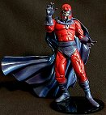
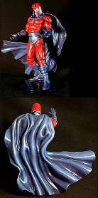
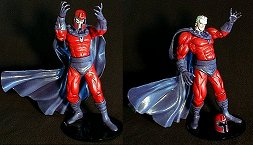
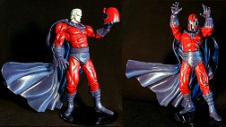

|
(Click on the pictures for a larger version)
Magneto was made from a Fists of the North Star figure, with some sculpted on accessories. The helmet was from a reworked (name escapes me) Foot Soldier, and the cape is a repainted from a WildCATS Hellspont figure.
When I first saw this figure, it immediately jumped out at me as Magneto. I mostly just had to do some sanding and sculpting. The neckpiece is Magic Sculp with small nail heads for the disks. The belt is a rubber band and the armband and bootbands are made from toothpaste tube. The cape was painted with Plastic Paint.
The figure has a limited amount of usable articulation, but the shoulders, elbows, and wrists allow for some dramatic poses, as you can see below. I am quite pleased with this custom, and very thankful to finally have it finished.


|